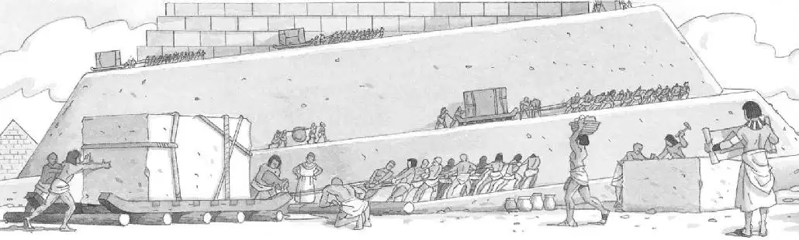

Building the Pyramids
It took many years to build a pyramid. It also took thousands of workers.
Egyptologists think the workers used wooden rollers to move giant stones across the desert. Some of these stones weighed over 4,000 pounds!
No one really knows exactly how the workers put the giant stones in place. Most Egyptologists think they built large ramps to raise the stones up the sides of the pyramid. When the pyramid was finished, the ramps were torn down.
Many people think the work on the pyramids was done by slaves. This is not true. Almost all the work was done by farmers during the flood season.
The farmers were paid to help build the pyramids. But most of them worked for a reason more important than money. They believed building the pyramids would help them get to the Next Life when they died.